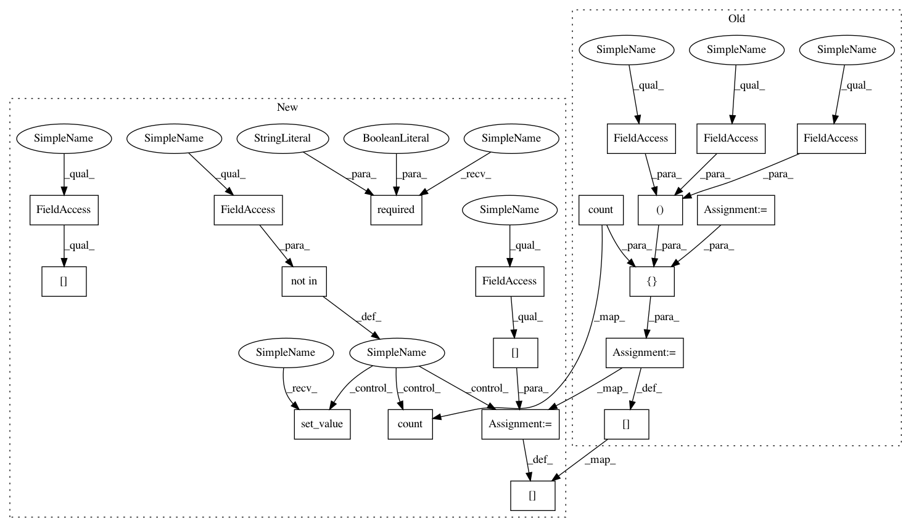

1672b5a9a47b081aa3e61c9f2ca76fae26ed8730,cheml/wrappers/cheml_cml/cheml_wrapper.py,Split,fit,#Split#,418
Before Change
self.Base.send[(self.iblock, token)] = [val, order.count(token),
(self.iblock, token, self.Host, self.Function)]
elif token == "df2":
val = df2
self.Base.send[(self.iblock, token)] = [val, order.count(token),
(self.iblock, token, self.Host, self.Function)]
else:
msg = "@Task //%i(%s): asked to send a non valid output token "%s"" % (self.iblock+1,self.SuperFunction,token)
raise NameError(msg)
// step7: delete all inputs from memory
After Change
class Split(BASE):
def fit(self):
// step1: check inputs
self.required("df", req=True)
df = self.inputs["df"].value
// step2: assign inputs to parameters if necessary (param = @token)
self.paramFROMinput()
// step3: check the dimension of input data frame
df, _ = self.data_check("df", df, ndim=2, n0=None, n1=None, format_out="df")
// step4: import module and make APIs
try:
from cheml.initialization import Split
split = Split(**self.parameters)
df1, df2 = split.fit(df)
except Exception as err:
msg = "@Task //%i(%s): "%(self.iblock+1, self.Task) + type(err).__name__ + ": "+ err.message
raise TypeError(msg)
// step5: process
// step6: send out
order = [edge[1] for edge in self.Base.graph if edge[0] == self.iblock]
for token in set(order):
if token not in self.outputs:
msg = "@Task //%i(%s): not a valid output token "%s"" % (self.iblock + 1, self.Task, token)
raise NameError(msg)
elif token == "df1":
self.set_value(token, df1)
self.outputs[token].count = order.count(token)
self.Base.send[(self.iblock, token)] = self.outputs[token]
elif token == "df2":
self.set_value(token, df2)
self.outputs[token].count = order.count(token)
self.Base.send[(self.iblock, token)] = self.outputs[token]
// step7: delete all inputs from memory
del self.inputs
In pattern: SUPERPATTERN
Frequency: 3
Non-data size: 20
Instances
Project Name: hachmannlab/chemml
Commit Name: 1672b5a9a47b081aa3e61c9f2ca76fae26ed8730
Time: 2017-11-12
Author: mojtabah@buffalo.edu
File Name: cheml/wrappers/cheml_cml/cheml_wrapper.py
Class Name: Split
Method Name: fit
Project Name: hachmannlab/chemml
Commit Name: 1672b5a9a47b081aa3e61c9f2ca76fae26ed8730
Time: 2017-11-12
Author: mojtabah@buffalo.edu
File Name: cheml/wrappers/cheml_cml/cheml_wrapper.py
Class Name: Split
Method Name: fit
Project Name: hachmannlab/chemml
Commit Name: 1672b5a9a47b081aa3e61c9f2ca76fae26ed8730
Time: 2017-11-12
Author: mojtabah@buffalo.edu
File Name: cheml/wrappers/cheml_cml/cheml_wrapper.py
Class Name: RDKitFingerprint
Method Name: fit
Project Name: hachmannlab/chemml
Commit Name: 1672b5a9a47b081aa3e61c9f2ca76fae26ed8730
Time: 2017-11-12
Author: mojtabah@buffalo.edu
File Name: cheml/wrappers/cheml_cml/cheml_wrapper.py
Class Name: SaveFile
Method Name: fit